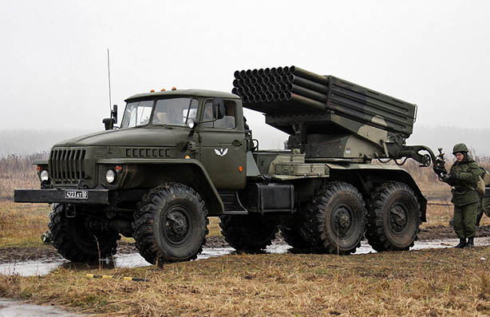

БМ-21 «Град» (абр. від Бойова́ маши́на, Індекс ГРАУ 9К51) — реактивна система залпового вогню калібру 122 мм. Розроблена в СРСР, випускалася на базі шасі вантажівки Урал-375 із встановленою пусковою установкою 2Б5. БМ-21 «Град» є розвитком установки залпового вогню «Катюша», а також базою для інших систем, зокрема 9К55 «Град-1».
Основні снаряди радянського та російського виробництва:
Також має позначення М-21ОФ та М-21Ф, індекс 9М22, таблиці стрільб ТС-74 створений в НДІ-147 (нині НВО «Сплав»). Був першим, та деякий час єдиним снарядом для РСЗВ «Град»
Осколково-фугасний реактивний снаряд М-21ОФ призначений для знищення та придушення живої сили та техніки супротивника в районах зосередження, артилерійських та мінометних батарей, для руйнування укріплень, опорних пунктів та вузлів спротиву супротивника.
На реактивному снаряді встановлені лопаті стабілізатора, що надають йому обертального руху під час польоту. Для поліпшення купчатості бою на головну частину снаряду надягають спеціальні гальмівні кільця: мале — при дальності стрільби 12-15,9 км, великі — при дальності менше 12 км.
Корпус реактивного двигуна досить довгий, тому він зроблений з двох циліндричних секцій.
Сопловий блок має одне центральне сопло та шість периферійних.
В снаряді використаний головний підривач ударної дії МРВ (МРВ-У). Підривач має три позиції: миттєвої дії, малої, та великої затримки. Бойова частина 9Н22.
На базі снаряду 9М22 створений осколково-хімічний снаряд 9М23 «Лейка».
9М22У — модернізована версія осколково-фугасного реактивного снаряду 9М22 (М-21ОФ). Створений в НДІ-147 (НВО «Сплав»). Має модернізований реактивний двигун з паливом РСТ-4К та бойову частину 9Н22У.
При вибуху головна частина викидає 1640 осколків заданої подрібненості (масою 2,4 г) та 2280 від корпуса (середньою масою 2,9 г). Таким чином теоретично снаряд має викинути 3920 осколків, на практиці ж маса, розміри, та кількість випущених осколків може бути іншою — через неможливість повного контролю за перебігом та впливом детонації на корпус снаряда. Повний залп — 40 реактивних снарядів, таким чином, призводить до детонації 256 кг вибухової речовини та викидання близько 156 800 осколків різної маси.
На базі осколково-фугасного 9М22У снаряда 1971 НВО «Сплав» був створений запалювальний снаряд М-21З (9М22С). Основна відмінність від базового снаряда — встановлення запалювальної бойової частини.
РCЗВ «Град» може використовувати такі снаряди:
| Осколково-фугасні | |||||||
| 9М22 | 9Н51 | 65,72…66 | 2870 | 18,4 | 6,4 | контактний | 5…20,4 |
| 9М22У | 9Н51 | 66,6…66,78 | 2870 | 18,4 | 6,4 | контактний | 5…20,4 |
| 9М22У-1 | 9Н51 | 66,6 | 2870 | 18,4 | 6,4 | контактний | 5…20,4 |
| 9М28Ф | 9Н55 | 56,5 | 2870 | 21 | 6,02 | контактний | 4…15 |
| 9М521 | 66 | 2840 | 21 | електронний | 15…40 | ||
| 9М522 | 70 | 3037 | 25 | 4,5 | електронний | 8…37,5 | |
| M-21 OF | 66 | 2750 | 19,9 | контактний | до 20,217 | ||
| Type 81 (осколково-фугасний) | 60 | 18,3 | контактний | до 20 | |||
| Type 81 (збільшеної дальності) | 61 | 2757 | неконтактний | до 30 | |||
| Type 90A (осколково-фугасний | 61 | 2757 | 18,3 | контактний | 12,7…32,7 | ||
| Rocket Steel Ball Shell | 66,8 | 2870 | 19,25 | 6 | контактний | до 20 | |
| Arash | 65 | 2815 | 18,38 | контактний | до 21,5 | ||
| Noor | 45 | 2050 | 18,35 | контактний | до 18 | ||
| Long Range Rocket | 72 | 3200 | 18 | контактний | до 29 | ||
| HE Yarmuk | 66 | 2875 | 20,4 | 6 | контактний | до 20,58 | |
| GRAD | 66,18 | 2753 | контактний | до 20,13 | |||
| SPALL | 66,18 | 2753 | контактний | до 20,13 | |||
| LR | 46,25 | 12 | 6,4 | контактний | до 12 | ||
| EXP-122 | 70,8 | 20 | контактний | до 24,6 | |||
| JROF | 65,8 | 2881 | 6,4 | контактний | |||
| JROF-K | 46,3 | 1932 | 6,4 | контактний | до 11 | ||
| Extended Range Artillery Rocket | 65,9 | 2900 | 18,4 | контактний | 10…40 | ||
| Касетні | |||||||
| 3М16 | 3М18 | 56,4 | 3019 | 21,6 | 5×0,14 | безконтактний | 2,5…13,4 |
| 9М28К | 57,7 | 3019 | 22,8 | 3×1,85 | безконтактний | 2,5…13,4 | |
| 9М43 | 56,5 | 2270 | 21 | 5×0,8 | безконтактний | 5…20,1 | |
| 9М217 | 70 | 3037 | 25 | електронний | 8…30 | ||
| 9М218 | 70 | 3037 | 25 | електронний | 8…30 | ||
| Type 81 (з КОБЕ) | 60,5 | 2927 | 18,3 | безконтактний | до 20 | ||
| Type 81 (з мінами) | 60 | безконтактний | 7…15 | ||||
| Type 90A (касетний) | 60,5 | 2927 | 19 | безконтактний | до 32 | ||
| Fadjr 6 | 63 | 2830 | 32 | безконтактний | 3,5…6 | ||
| PLATAN | 75,1 | 3285 | безконтактний | до 18 | |||
| JRKK-G | AGAT | 68 | безконтактний | 6,5…33 | |||
| Trnovnik | 65,8 | 2780 | 14,85 | безконтактний | 6,5…33 | ||
| Керовані | |||||||
| «Угроза-1М»[вин 31] | 66 | 2870 | 21 | 5,0 | контактний | 1,6…42 | |
| Запалювальні | |||||||
| 9М22С | 9Н510 | 66 | 2970 | 17,8 | 5,94 | контактний | 1,5…19,89 |
| 9М28С | 9Н510 | 53 | 2318 | 17,8 | 5,94 | контактний | 1,65…15,07 |
| Агітаційні | |||||||
| 9М28Д | 9Н511 | 52,3 | 2280 | 17 | 0,142 | безконтактний | 1,65…15,42 |
| Освітлювальні | |||||||
| 9М42 | 27 | 1760 | безконтактний | 1…5 | |||
| Постановщик вад КХ/УКХ | |||||||
| 9М519(-1…7)[вин 33] | 66 | 3025 | 18,4 | — | безконтактний | 4,5…18,3 | |
| Хімічні | |||||||
| 9М23 | 9Н56 | 66,7 | 19,3 | 2,9 | безконтактний | до 19 | |
| 9М23М | 9Н57 | 67 | 19,3 | 3,1 | безконтактний | до 20 | |
| 9Н58 | 3,075 | безконтактний | |||||
| Навчальні | |||||||
| 9М28ФУЧ-ТР | — | 56,5 | 2870 | — | — | — | 4…15 |
| 9Ф839 | 74,5 | 3370 | — | — | до 11 | ||
| 9Ф839-1 | 74,5 | 3370 | — | — | до 11 | ||
| 9Ф839-2 | 77,8 | 3378 | |||||